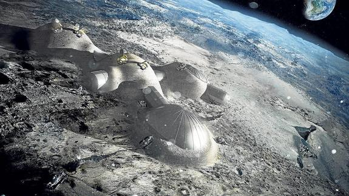

Viaje Medio

El paquete medio incluye todo lo anterior visto en el paquete economico pero esta vez en la nave P0_LL4 (baño incluido) y con trajes P3_R0N que presentan mas funciones como
un revestimiento a base de plomo que lo hara mucho mas resistente a la radiacion del espacio y del planeta marciano (no se recomienda el contacto directo con la parte exterior del
del traje y que se descarte completamente despues de su uso) su hospedaje sera en la base movil de tesla que lo ira a buscar apenas aterrice en la superficie del planeta (NO SE RECOMIENDA BAJO NINGUNA
CIRCUNSTANCIA BAJARSE DE LA NAVE HASTA QUE LLEGUE LA BASE MOVIL, LA SUPERFAUNA DEL PLANETA DESARROLLO GUSTO POR LA CARNE HUMANA),pasara unas 2 semanas hermosas en la plataforma movil mientras contempla
los majestuosos desiertos del planeta rojo

El viaje incluye una parada en la Base lunar de SpaceX en la cual se podra hacer fotos y pasar una noche en las habitaciones de la base mientras la nave se abastece de combustible para el viaje
de regreso a la tierra (la empresa no se hace responsable si se queda barado en la base lunar,fijese en los horarios de despegue de la nave), las actividades que se podran hacer incluyen
la recoleccion de rocas lunares y caminatas en gravedad baja.
 Advertencia: Debido a los multiples ataques sufridos por la superfauna del planeta marte este paquete se encuentra fuera de servicio
Pide tu viaje ahora
Advertencia: Debido a los multiples ataques sufridos por la superfauna del planeta marte este paquete se encuentra fuera de servicio
Pide tu viaje ahora